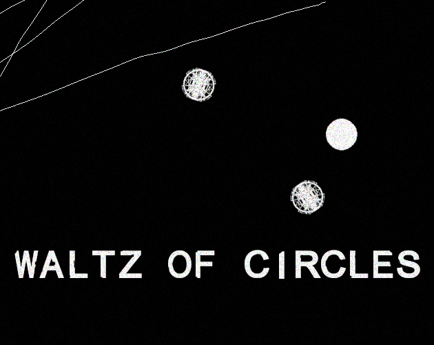

Waltz of circles Game Design
Summary

Survive your enemies and make them collide into each others in this intense mobile game.
You are the last device that is not controlled by a corrupted AI. You have no weapons, but you will get some abilities to help you to sneak between enemies and to cheat them. Survive to hordes of controlled devices, make them to crash during intensive chases.
Tied to the soundtrack, enemies move by the rhythm of the music. Combining a minimalist visual style and a supercharged soundtrack, players need to focus on their reactivity.
Design pillars
Losing is part of the progression
The player won't get that far without special abilities. So, losing and earning experience points is part of the process to gain abilities that will help you to go further.
Adding some generative details
The position of the enemies is randomly generated, so when you restart a level, the players don't feel it is repetitive.
Immersive
The game is tied to the soundtrack. It's not a musical game, but you better have a sense of rhythm to anticipate the enemies' movements.
Minimalist and harsh
To contribute to the oppressive ambiance, the visuals made of black and white colors look harsh and minimalist.
Game loops
The main goal is to finish all the levels. At every new level, the players have hard time to go further. It is part of the game.
Every time they lose the game, they earn XP. At some stages, the players win an ability that they can use to upgrade their device. They can't mount all abilities, they have to chose.
The players don't restart from the whole begin, there are checkpoints. When the players passed a checkpoint, they restart from this last checkpoint.